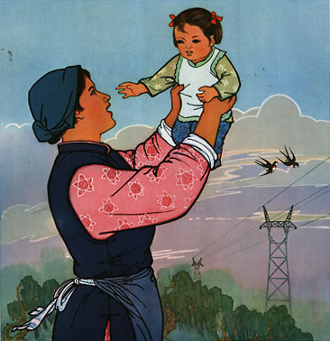

<!DOCTYPE html>
<html>
  <head>
    <link rel="stylesheet" href="boilerplate.css" />
    <link rel="stylesheet" href="styles.css" />
    <meta charset="utf-8" />
    <meta name="viewport" content="initial-scale = 1.0,maximum-scale = 1.0" />
    <link
      href="https://fonts.googleapis.com/css?family=Oswald:400,300,700"
      rel="stylesheet"
      type="text/css"
    />
  </head>
  <body>
    <div id="hidNav">
      <ul class="links">
        <li><a href="about.html"> ABOUT</a></li>
        <li><a href="contact.html"> CONTACT</a></li>
        <li><a href="sources.html"> SOURCES</a></li>
      </ul>

      <ul class="thumbnails">
        <li>
          <a
            style="background-image: url(images/navImage1.jpg)"
            href="index.html"
          >
            INTRODUCTION</a
          >
        </li>
        <li>
          <a
            style="background-image: url(images/navImage2.jpg)"
            href="ch1.html"
          >
            CONSCIOUSNESS RAISING</a
          >
        </li>
        <li>
          <a
            style="background-image: url(images/navImage3.jpg)"
            href="ch2.html"
          >
            IRON GIRLS</a
          >
        </li>
        <li>
          <a
            style="background-image: url(images/navImage4.jpg)"
            href="ch3.html"
          >
            CHALLENGING FEMININITY</a
          >
        </li>
        <li>
          <a
            style="background-image: url(images/navImage5.jpg)"
            href="ch4.html"
          >
            THE TURNING <br />POINT</a
          >
        </li>
      </ul>
    </div>

    <div id="openNav"></div>
    ​

    <div id="ch4p1" class="ch4p1 clearfix"></div>

    <div id="ch4p2" class="ch4p2 clearfix">
      <p id="ch4p2secondary">
        <span id="textspan"
          >FOR FEMINISTS, CHINA’S PROMOTION OF BIRTH CONTROL , INCLUDING ACCESS
          TO ABORTION, CONDOMS AND OTHER CONTRACEPTIVES, AS WELL AS SEX
          EDUCATION, IN THE 1950's AND 1960's, WAS PROOF OF CHINA’S COMMITMENT
          TO IMPROVING CONDITIONS FOR WOMEN. </span
        ><br />
      </p>
    </div>

    <div id="ch4p3" class="ch4p3 clearfix">
      <p id="ch4p3pullout1">
        Yet, over time, abortion and population control became less about
        women’s liberation and more about government control and, thus,
        problematic for Western feminists. <br />
      </p>
      <p id="ch4p3copy1">
        <span id="textspan"
          >At the heart of the argument is the premise that the high regard in
          which China was initially held regarding women’s liberation means that
          a sense of disappointment and betrayal can easily occlude a
          recognition of both the benefits as well as the negative outcome from
          government population policy. The example discussed here is that of
          the massive gender disparity which has arisen since the 1990s.
          Although superficially an easy target for feminist critique, the
          gender disparity and the government’s efforts to ameliorate the
          problem are not well understood outside China.</span
        ><br />
      </p>
      <p id="ch4p3pullout2">
        One of the most controversial aspects of the One-Child-Policy has been
        abortion. <br />
      </p>
      <p id="ch4p3copy2">
        Throughout the 1970s the Chinese government encouraged women to start
        families late, practice contraception, and limit their family size for
        the good of the country. Abortion, legalized in 1957 after a long battle
        by women within the Communist Party, was not commonly performed until
        the introduction of a national family planning program in the 1970s. The
        number of abortions increased in 1983 due to the implementation of a
        strict one child per couple policy. In 1984 a relaxation of the policy
        allowed many rural couples to have a second child if the first were a
        girl. As a result, the number of abortions fell dramatically. By the
        late 1980s the number of abortions had again increased when family
        planning restrictions mandated a spacing of some years between first and
        permitted second births. <br /><br />By the 1990s a cultural acceptance
        of abortion was enhanced with the technical means to discover the sex of
        the unborn child. This had a dramatic effect on the practice of
        abortion.<br /><br />Chinese women could choose traditional methods of
        determining the sex of the fetus, and one research team reported there
        was a more than 80% accuracy rate using traditional Chinese medicine. It
        was the introduction of new technology, however, that enabled the
        massive gender ratio disparity to develop despite the inaccuracy of both
        amniocentesis and ultrasound until the final trimester.<br /><br />By
        the end of the 1990s, extensive research was consistently recording that
        a sex ratio imbalance was widespread across some parts of China.
        Under–reporting, increased female infant mortality, and the abandonment
        of girl children failed to account for all of the large number of
        “missing girls.” <br /><br />
      </p>
      
      <p id="ch4p3caption">
        “Less births, better births, to develop China vigorously,” 1987<br />
      </p>
      <p id="ch4p3pullout3">
        It has been estimated that at least 8.5 million girls are indeed
        “missing” due to being aborted.<br />
      </p>
    </div>

    <div id="ch4p4" class="ch4p4 clearfix">
      <p id="ch4p4copy">
        Underlying attitudes towards son preference seemed to guide reproductive
        behavior. Traditionally, in old age parents would rely predominantly on
        sons, since daughters “married out” into other families, thereby joining
        another economic unit. Traditional sayings supported the value of having
        sons, with feeding girls equated with feeding a mouth in another family
        or throwing away resources. Having a son was an important obligation of
        filial piety that was outlined in
        <span class="italic">The Book of Rites </span>(pictured here). According
        to Mencius, a follower of Confucius in the fourth century BC, not having
        an heir (son) was the most serious form of unfilial behaviour.<br />
      </p>
    </div>

    <div id="ch4p5" class="ch4p5 clearfix">
      <p id="ch4p5pullout1">
        The problem of the status of women and preferencing of sons has been
        long recognized by the Chinese government.<br />
      </p>
      
      <p id="ch4p5copy1">
        The 1949 Marriage Law aimed to improve the status of women and children
        by outlawing what was termed “feudal practices.” From at least the 1970s
        the Chinese government has included a practice of stressing the value of
        girls in its population programs. Billboards exhorting the value of
        population control often use girls as models in a conscious attempt to
        reverse centuries old beliefs regarding the low value of daughters. For
        the Chinese government, son preference is evidence of the continuing
        presence of “feudal remnants” in Chinese society. With increasing
        modernization and urbanization, it reasons, such attitudes should die
        out. <br />
      </p>
      <p id="ch4p5caption">
        "Practicing birth control is beneficial for the protection of the health
        of mother and child" <br />- early 1960s<br />
      </p>
      <p id="ch4p5pullout11">
        For feminists the "missing girls" issue is a fraught one.<br />
      </p>
      <p id="ch4p5copy2">
        The problem has rightly been recognized as of grave concern. Girls are
        suffering discrimination that results in neglect or death as a result of
        the attitude of son preference. Girls are being abandoned and denied
        education and health care. However, for pro–choice feminists the missing
        girl problem raises a serious hurdle. It is difficult to argue for a
        woman’s right to choose abortion and yet argue against the woman’s right
        to choose to abort a female fetus. <br /><br />Some have gone so far as
        to call this “femicide” or “gendercide”—the systematic wiping out of
        females. However the “right to choose” argument recognizes that a woman
        may decide to abort a fetus because she believes having a child will
        cause hardship (either emotional or economic through pressure from the
        extended family and/or the husband) and thus will have a negative effect
        on her health and her life. That the fetus is female does not undermine
        this argument. The difficulty for pro–choice feminists, then, is how to
        argue for a woman’s right to choose but argue against sex–selective
        abortion. As Mary Warren states, “there is a great danger that the legal
        prohibition of sex selection would endanger other aspects of women’s
        reproductive freedom.” Sex–selective abortion highlights potential
        weakness in pro–choice rhetoric.<br /><br />I do not wish to diminish
        the importance of reporting coercion, forced sterilizations, and late
        term abortion; I do want to argue that the Chinese population policies
        and practices are being analyzed in a very morally and politically
        charged atmosphere. It is difficult to critically discuss something as
        controversial as China’s population policy (in the West generally and
        the United States particularly) when everything is taken as either pro–
        or anti–abortion or pro– or anti–China. <br />
      </p>
      <p id="ch4p5pullout12">
        China’s dual position, first as a model for women’s liberation and later
        as a failed feminist state, further complicates how the situation for
        Chinese women is understood.<br />
      </p>
      <p id="ch4p5copy3">
        New economic options that have allowed the rural population to access
        economic possibilities previously unavailable offer attractive options
        for young rural women. Higher living standards, together with the
        increase in costs for medical and educational expenses due to the
        retreat of the state and the introduction of user pays systems, mean
        that families now spend a great proportion of their income on their
        child. Vanessa Fong has described this as the “first world children,
        third world parents” phenomenon, a condition in which all family
        resources are poured into the child, especially with regard to
        education. <br />
      </p>
    </div>

    <div id="ch4p6" class="ch4p6 clearfix">
      <p id="ch4p6secondary">
        THESE CHINESE “FIRST WORLD GIRLS” ARE THE FIRST GENERATION IN CHINA’S
        LONG HISTORY TO HAVE SUCH ACCESS TO FAMILY RESOURCES AND SUPPORT. <br /><br />RECOGNIZING
        THEIR POTENTIAL REQUIRES MOVING BEYOND THE CONSTRAINTS IMPOSED BY THE
        ASSESSMENT OF CHINA AS AN OPPRESSIVE PATRIARCHAL STATE.<br />
      </p>
    </div>

    <div id="ch4bottomnav">
      <a href="ch3.html" class="left">
        <p class="chapterLeft">CHAPTER 3:</p>
        <p class="titleLeft">CHALLENGING FEMININITY</p>
      </a>
      <ul>
        <li><a href="about.html"> ABOUT </a></li>
        <li><a href="contact.html"> CONTACT </a></li>
        <li><a href="sources.html"> SOURCES </a></li>
      </ul>
    </div>

    <script src="https://code.jquery.com/jquery-1.11.0.min.js"></script>
    <script type="text/javascript">
      $("#openNav").click(function () {
        var menu = $("#hidNav");
        if ($(menu).is(":visible")) {
          $(menu).animate({ height: 0 }, 500, function () {
            $(menu).hide();
          });
        } else {
          $(menu).show().animate({ height: 170 }, 500);
        }
      });
    </script>
  </body>
</html>
